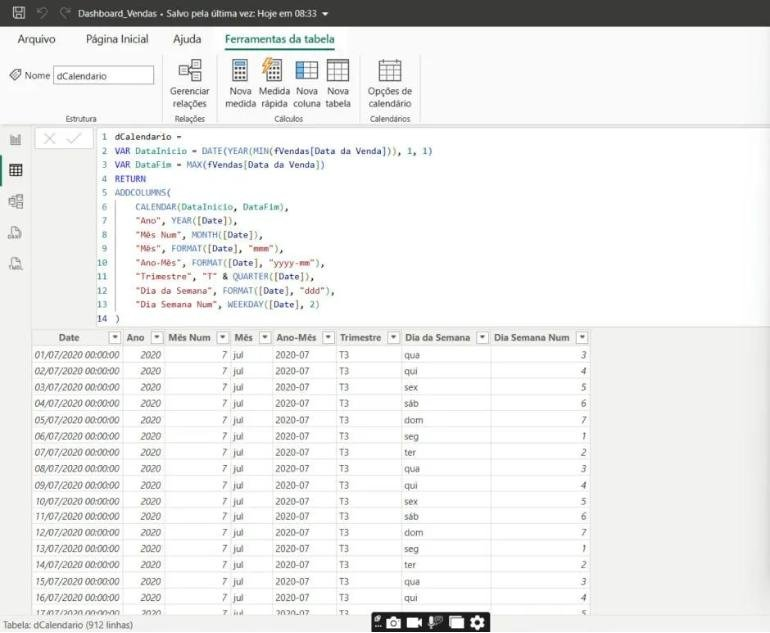
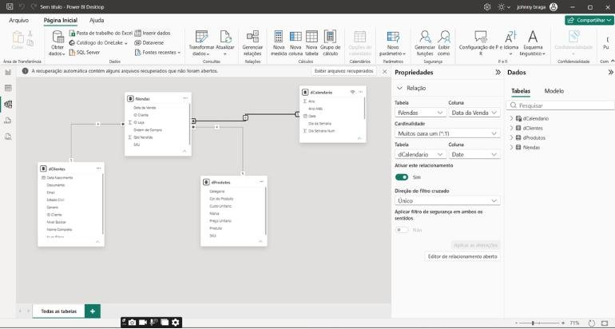

Calendário e inteligência de tempo: acumulado, ano anterior e média móvel
Você vai construir uma tabela calendário completa, entender por que ela é obrigatória, e criar as medidas de tempo que todo gestor pede: acumulado do ano, mês anterior, mesmo período do ano passado, crescimento e média móvel.
- Nível
- Intermediário
- Duração
- 3 horas
- Você vai precisar
- O projeto da aula 6 (fVendas, dCalendario e a medida Faturamento Total)
- Conteúdos
- dCalendarioCALENDARMarcar como tabela de datasData/hora automáticaTOTALYTDDATESYTDSAMEPERIODLASTYEARDATEADDDATESINPERIODAcumuladoMédia móvel
01Por que uma tabela calendário
Funções de tempo do DAX só funcionam direito com uma tabela de datas contínua.
A fVendas tem a coluna Data da Venda, mas só com os dias em que houve venda. Dias sem venda simplesmente não existem ali. As funções de inteligência de tempo precisam de uma tabela com todos os dias, sem buracos, do primeiro ao último ano.
| Sem dCalendario | Com dCalendario |
|---|---|
| Meses sem venda somem do gráfico | Todos os meses aparecem (com zero ou vazio) |
| Meses em ordem alfabética | Meses classificados por número |
| SAMEPERIODLASTYEAR dá resultado errado ou vazio | Comparações de período funcionam |
| Cada fato tem sua própria data (vendas, metas) | Uma data comum filtra todas as fatos |
02Desligue a data/hora automática
Arquivo → Opções e configurações → Opções → em ARQUIVO ATUAL, Carregamento de Dados → desmarque Data/hora automática. Faça o mesmo em GLOBAL para os próximos projetos.
Com a opção ligada, o Power BI cria uma tabela de datas escondida para cada coluna de data do modelo. Isso pesa o arquivo e gera hierarquias que não conversam entre si. Com uma dCalendario sua, você controla tudo.
03Construindo a dCalendario completa
Modelagem → Nova tabela (substitua a da aula 6 se quiser):
dCalendario =
VAR DataInicio = DATE ( YEAR ( MIN ( fVendas[Data da Venda] ) ), 1, 1 )
VAR DataFim = MAX ( fVendas[Data da Venda] )
RETURN
ADDCOLUMNS (
CALENDAR ( DataInicio, DataFim ),
"Ano", YEAR ( [Date] ),
"Trimestre", "T" & QUARTER ( [Date] ),
"Mês Num", MONTH ( [Date] ),
"Mês", FORMAT ( [Date], "mmm" ),
"Mês Ano", FORMAT ( [Date], "mmm/yy" ),
"AnoMês Num", YEAR ( [Date] ) * 100 + MONTH ( [Date] ),
"Dia Semana Num", WEEKDAY ( [Date], 2 ),
"Dia da Semana", FORMAT ( [Date], "ddd" ),
"Fim de Semana", IF ( WEEKDAY ( [Date], 2 ) >= 6, "Sim", "Não" ),
"Semestre", IF ( MONTH ( [Date] ) <= 6, "1º Sem", "2º Sem" )
)| Coluna | Para que serve |
|---|---|
| Mês Ano + AnoMês Num | Eixo de linha do tempo mês a mês, em ordem certa |
| Mês + Mês Num | Comparar sazonalidade (jan de todos os anos juntos) |
| Fim de Semana | Segmentar dias úteis x fim de semana |
| Semestre | Comparar 1º semestre de cada ano (a base 2022 vai só até junho) |

- Selecione a coluna Mês → Ferramentas de coluna → Classificar por coluna → Mês Num.
- Mês Ano → classificar por AnoMês Num.
- Dia da Semana → classificar por Dia Semana Num.
- Botão direito em dCalendario → Marcar como tabela de datas → coluna Date.
- Oculte as colunas “Num” (o usuário não precisa vê-las).
O relacionamento deve ser dCalendario[Date] (1) → fVendas[Data da Venda] (*). As duas colunas precisam ser do tipo Data (sem hora). Data/hora de um lado e data do outro não casam.

No painel Dados, arraste Trimestre para cima de Ano: o Power BI cria uma hierarquia. Inclua Mês nela. Renomeie para Hierarquia Data. Nos gráficos, as setas de drill down (↓) passam a navegar Ano → Trimestre → Mês.
Alternativa: calendário no Power Query (M)
Se preferir criar no Power Query (útil quando o modelo vai para outras ferramentas), use uma Consulta Nula:
let
Inicio = #date(2020, 1, 1),
Fim = #date(2022, 6, 30),
Datas = List.Dates(Inicio, Duration.Days(Fim - Inicio) + 1, #duration(1, 0, 0, 0)),
Tabela = Table.FromList(Datas, Splitter.SplitByNothing(), {"Date"}),
Tipo = Table.TransformColumnTypes(Tabela, {{"Date", type date}}),
Ano = Table.AddColumn(Tipo, "Ano", each Date.Year([Date]), Int64.Type),
MesNum = Table.AddColumn(Ano, "Mês Num", each Date.Month([Date]), Int64.Type),
Mes = Table.AddColumn(MesNum, "Mês", each Date.ToText([Date], "MMM", "pt-BR"), type text),
Trim = Table.AddColumn(Mes, "Trimestre", each "T" & Text.From(Date.QuarterOfYear([Date])), type text)
in
Trim04Medidas de inteligência de tempo
Todas partem da medida Faturamento Total da aula 6.
Faturamento YTD = TOTALYTD ( [Faturamento Total], dCalendario[Date] )
Em cada mês, soma de 1º de janeiro até o fim daquele mês. Equivale a CALCULATE([Faturamento Total], DATESYTD(dCalendario[Date])).
É o número que o diretor acompanha na reunião mensal: “quanto já vendemos este ano?”. Também é a base para comparar com a meta anual.
YTD em junho/2022 = R$ 7,06 Mi (todo o 1º semestre de 2022).
Faturamento Mês Anterior = CALCULATE ( [Faturamento Total], DATEADD ( dCalendario[Date], -1, MONTH ) ) Var. % Mensal = DIVIDE ( [Faturamento Total] - [Faturamento Mês Anterior], [Faturamento Mês Anterior] )
DATEADD desloca as datas do filtro atual em -1 mês. Numa linha de abril, ele olha para março.
Faturamento Ano Anterior (SPLY) = CALCULATE ( [Faturamento Total], SAMEPERIODLASTYEAR ( dCalendario[Date] ) ) Var. % Anual = DIVIDE ( [Faturamento Total] - [Faturamento Ano Anterior (SPLY)], [Faturamento Ano Anterior (SPLY)] )
Ano 2021: Faturamento R$ 5,98 Mi; ano anterior R$ 2,18 Mi; +174,0%. Ano 2022: como a dCalendario termina em 30/06/2022, o SPLY compara jan–jun/2022 (R$ 7,06 Mi) com jan–jun/2021 (R$ 1,06 Mi): +564,8%.
Comparar 6 meses de 2022 com 12 meses de 2021 faria parecer que as vendas caíram. É o erro mais comum em análises de tempo. Por isso o calendário termina na última venda.
Faturamento Acumulado =
VAR DataLimite = MAX ( dCalendario[Date] )
RETURN
CALCULATE (
[Faturamento Total],
FILTER ( ALL ( dCalendario[Date] ), dCalendario[Date] <= DataLimite )
)Diferente do YTD, não zera em janeiro: mostra a curva total de crescimento da empresa. ALL remove o filtro de data e FILTER devolve todas as datas até a data atual do gráfico.
Média Móvel 3M =
CALCULATE (
AVERAGEX ( VALUES ( dCalendario[AnoMês Num] ), [Faturamento Total] ),
DATESINPERIOD ( dCalendario[Date], MAX ( dCalendario[Date] ), -3, MONTH )
)DATESINPERIOD pega os últimos 3 meses a partir da data atual; AVERAGEX calcula a média do faturamento mês a mês dentro dessa janela.
O faturamento mensal oscila (feriados, promoções). A média móvel suaviza a linha e deixa a tendência mais clara. Coloque as duas no mesmo gráfico de linhas: barras para o mês, linha para a média.
Faturamento MTD = TOTALMTD ( [Faturamento Total], dCalendario[Date] ) Faturamento QTD = TOTALQTD ( [Faturamento Total], dCalendario[Date] )
Úteis em cartões quando o painel é atualizado todo dia: “quanto já vendemos este mês?”.
05Visuais de tempo que funcionam
| Visual | Campos | Pergunta |
|---|---|---|
| Linha e colunas | Eixo: Mês Ano · Colunas: Faturamento Total · Linha: Média Móvel 3M | Qual a tendência, sem o ruído mensal? |
| Linhas | Eixo: Mês · Legenda: Ano · Y: Faturamento Total | Existe sazonalidade? Os anos se comportam igual? |
| Área | Eixo: Mês Ano · Y: Faturamento YTD | Como o ano vai se acumulando? |
| Matriz | Linhas: Mês · Colunas: Ano · Valores: Faturamento, Var. % Anual | Quais meses cresceram mais que o ano anterior? |
| Cartões | Faturamento YTD, Var. % Anual, Var. % Mensal | Resumo para a diretoria |
Na matriz, clique na seta de Var. % Anual em Valores → Formatação condicional → Ícones → Estilo setas: verde para cima quando > 0, vermelha para baixo quando < 0.
A seta é lida antes do número. O gestor localiza em 1 segundo os meses que pioraram.
06Erros comuns
As medidas de tempo dão vazio
A dCalendario não está marcada como tabela de datas, ou o gráfico está usando fVendas[Data da Venda] no eixo em vez de colunas da dCalendario. Use sempre a data do calendário nos visuais.
Os meses aparecem em ordem alfabética
Falta Classificar por coluna (Mês por Mês Num).
O ano anterior mostra o ano inteiro contra meio ano
O calendário vai até 31/12 do último ano. Termine-o na última data de venda, ou use a medida com “último ano em contexto” da aula 6.
Erro: “a função espera uma coluna de datas contínua”
Você usou a coluna de data da fato dentro de DATEADD/SAMEPERIODLASTYEAR. Use dCalendario[Date].
07Atividades
A1 · Painel de tempo
BásicoCrie uma página “Tempo” com os 5 visuais da tabela acima e 3 cartões (YTD, Var. % Anual, Var. % Mensal).
A2 · Melhor e pior mês
BásicoPela matriz, descubra o mês com maior crescimento e o mês com maior queda em relação ao mês anterior. Escreva uma hipótese para cada um.
A3 · Pedidos YoY
IntermediárioCrie Pedidos Ano Anterior e Var. % Pedidos usando [Nº Pedidos]. O faturamento cresceu mais ou menos que o número de pedidos? O que isso diz do ticket médio?
A4 · Dias úteis
IntermediárioCompare faturamento médio por dia em dias úteis e fins de semana usando a coluna Fim de Semana. Crie a medida Faturamento Médio por Dia = AVERAGEX(VALUES(dCalendario[Date]), [Faturamento Total]).
A5 · Projeção simples
DesafioCrie Projeção 2022 = DIVIDE([Faturamento YTD], 6) * 12 filtrada em 2022. Discuta em grupo: essa projeção é confiável? O que ela ignora?
08Resumo da aula
- Uma dCalendario contínua, marcada como tabela de datas, com meses classificados.
- Desligue a Data/hora automática.
TOTALYTD,DATEADD,SAMEPERIODLASTYEAR,DATESINPERIODsão as funções do dia a dia.- Compare sempre períodos equivalentes.
- Média móvel mostra tendência; formatação condicional mostra onde olhar.